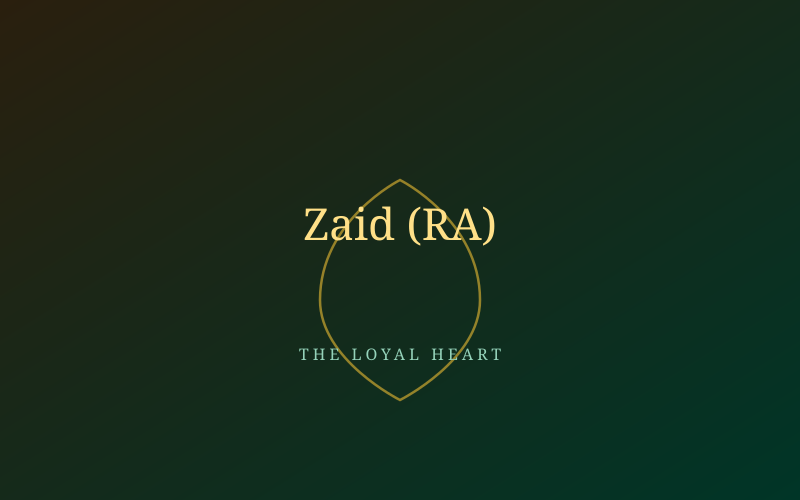

Zaid ibn Harithah (RA)
A man freed twice over — once from slavery, and once for faith.

From Captivity to Family
Zaid ibn Harithah had been separated from his family as a boy and sold into slavery, eventually coming into Khadija's (RA) household, who gifted him to the Prophet ﷺ upon her marriage. When Zaid's birth father later traced him and offered a ransom for his return, the Prophet ﷺ gave Zaid the choice to leave freely. Zaid chose to stay. Moved by this loyalty, the Prophet ﷺ freed him and adopted him as a son, and from then on he was known as Zaid ibn Muhammad — until later revelation restored the practice of children being named after their birth fathers.
Believing Without Delay
When the call to Islam came, Zaid (RA) was among the very first to answer — alongside Khadija and Ali (RA). His acceptance came not from family pressure or social advantage, but from the same plain conviction every early believer shared: he recognised the truth, and he held to it.
"I will never choose anyone over you." — Zaid ibn Harithah (RA), choosing to remain with the Prophet ﷺ over returning to his birth family
A Lesson in Equality
Zaid's (RA) story, set beside Khadija's wealth and Ali's noble lineage, carried a quiet but radical message: in the new faith, a formerly enslaved man stood as equal in conviction and honour to anyone else in Makkah. This principle of equality before Allah would become one of early Islam's most distinctive — and most threatening, to Makkah's social order — teachings.
- Among the first handful of believers, alongside Khadija and Ali (RA).
- Freed from slavery and adopted as a son by the Prophet ﷺ before prophethood began.
- Later commanded armies and is the only companion named directly in the Qur'an (Surah Al-Ahzab, 33:37).
Continue the Archive
Meet the wider circle of Early Believers brought to Islam through Abu Bakr's quiet network.
Read Their Stories →